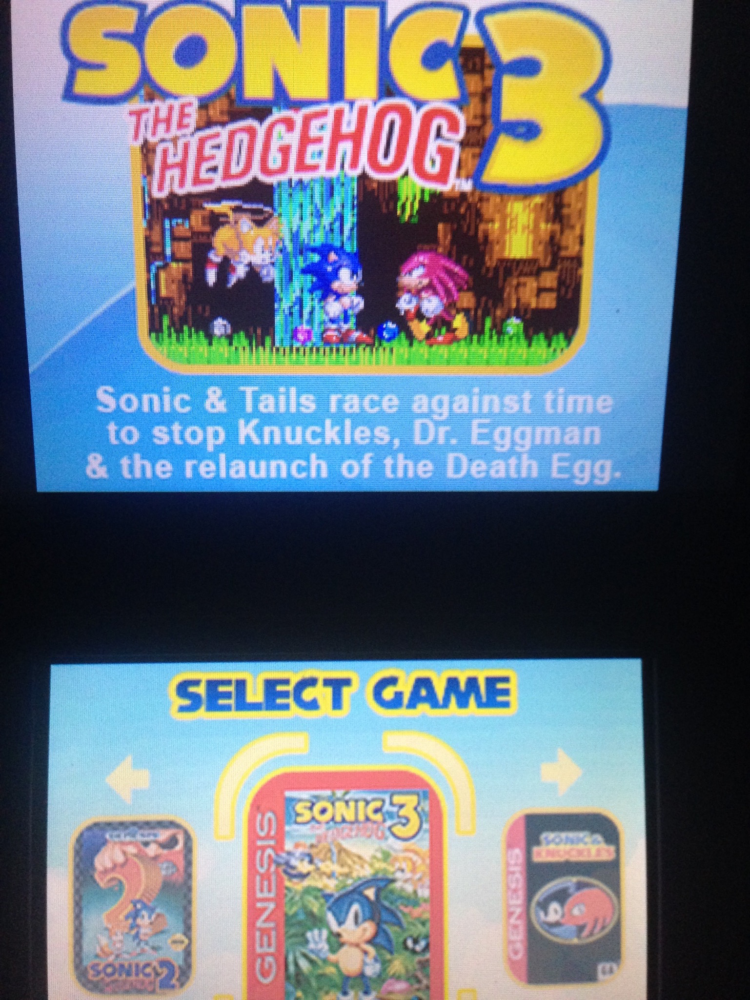
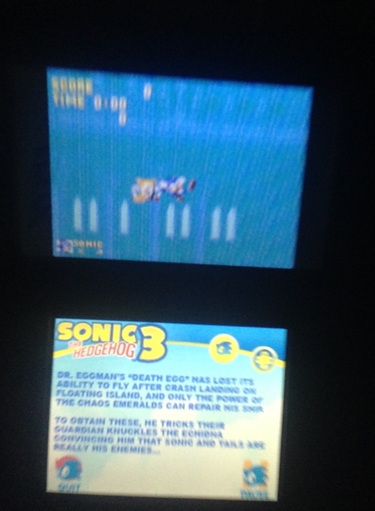
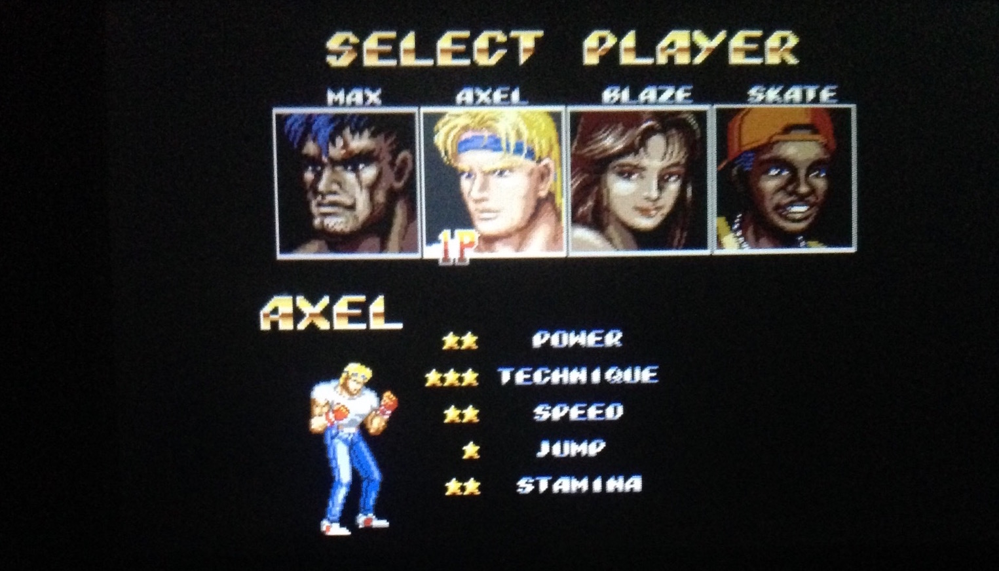
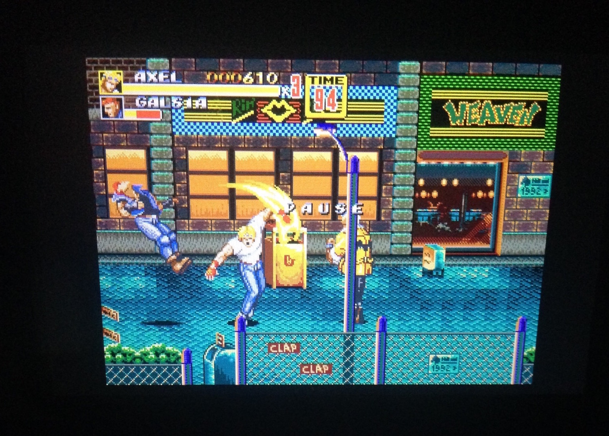
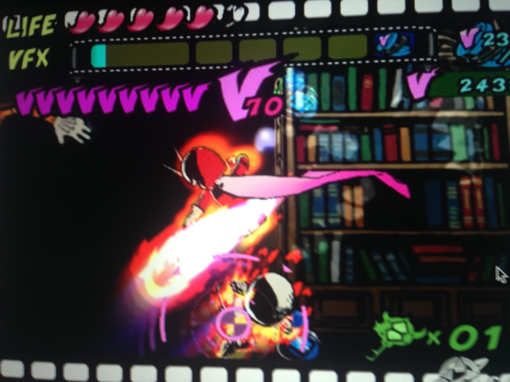
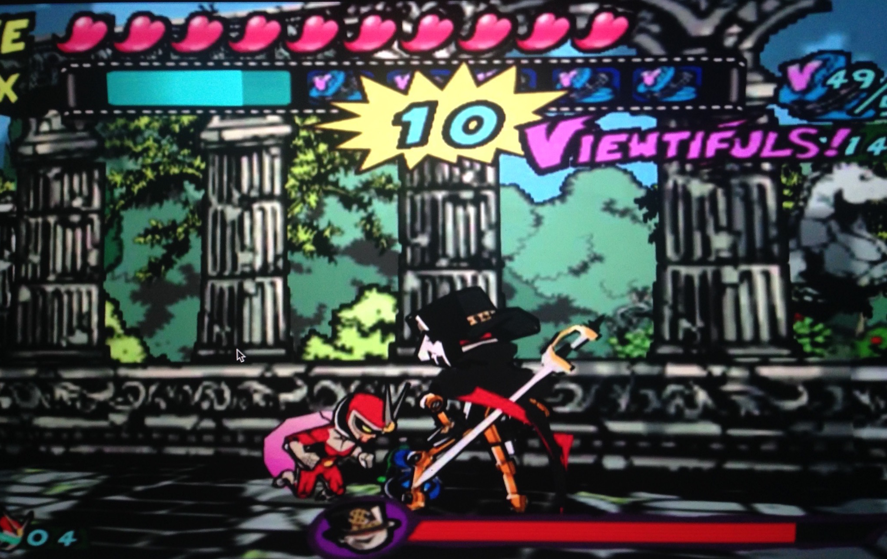
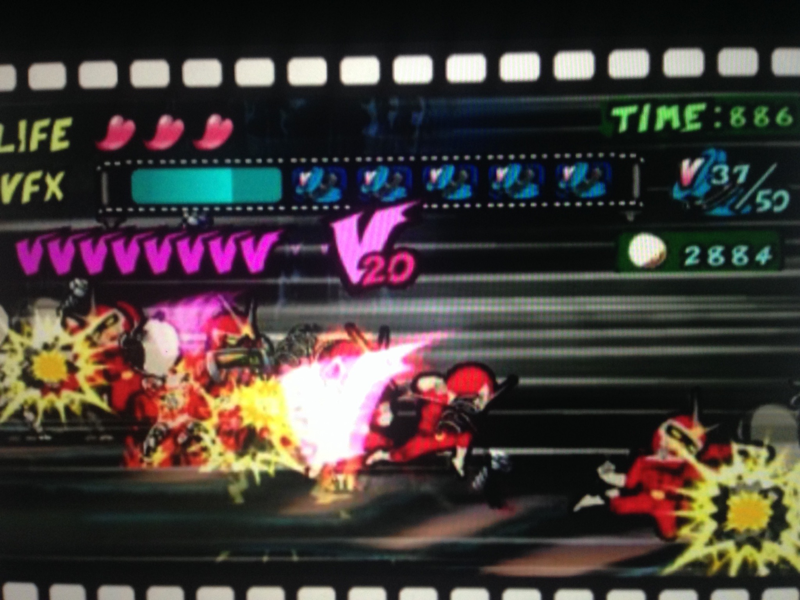

Sonic Classic Collection:
This game was released in 2010 to the Nintendo DS. It contains the four sonic games that were originally on the Sega Genesis. They are Sonic 1, Sonic 2, Sonic 3 and Sonic and Knuckles.The 2d platformer that is focused on completing levels as fast as possible.
As you play through all the games new characters and abilities are introduced to diversify the games. In the first game its just Sonic the Hedgehog who is incredibly fast and has a high jump. The second game the new character tails has the ability to fly for a short period of time.
In the third and fourth you get access to knuckles who can glide and climb walls.
These games have a great soundtrack. I recommend this game if you are into platformers. The controls are tight and responsive. They progressively get difficult. However, They are easy to pick up and play.


Streets Of Rage 2:
This game was released in 1992 on the Sega Genesis and rereleased of the Nintendo 3Ds. It is Side-scrolling beat-em up where you can choose up to four playable characters each with their own special attacks and stats. The point of the game is to lay the smack down on anyone that gets in your way and progress to the end. I recommend this game.
However, you are doing the same thing from beginning to end and the game meet become stale. Especially, if this style of game is not your cup of tea.


Viewtiful Joe:
Viewtiful Joe came out on the gamecube in 2003. It is a 2.5d side-scrolling beat-em up where you play a guy named Joe who is trapped inside a movie and has to save his girlfriend Silvia. This game mixes platforming, combat and puzzle gameplay. As you play through the game you gain new abilities like being able to slow down and speed up time and special attacks. This is a very enjoyable game. Being able to slow down and speed up time gives special effects to your attacks. The major issue with this game is balance. I feel that it leans to heavy on puzzle when its combat is the best thing about it. Also this game is difficult, this isn't an issue I have when playing however to newcomers the difficulty will take some getting used to. This is a game I recommend however it isn't for everyone.


